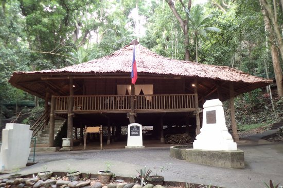

Josephine Bracken
Born in Hong Kong, she came to Dapitan in early 1895 and became Rizal's partner. She stayed with him until his departure in 1896.
Mindanao, 1892–1896
Four years of exile turned a quiet coastal town into the place where José Rizal taught, healed, farmed and studied. This exhibit walks through those years.
On July 17, 1892, Rizal arrived in Dapitan as a political exile. He left on July 31, 1896. In between, he practiced medicine, opened a school, improved the town and collected scientific specimens.
Explore the timeline
Select an event to read its context. Events appear in chronological order.
Rizal founded La Liga Filipina in Manila on July 3, 1892. Days later he was arrested, and Governor-General Eulogio Despujol ordered him deported to Dapitan, then a remote town in northern Mindanao.
Rizal arrived aboard the steamer Cebu. The local commandant, Captain Ricardo Carnicero, treated him with respect and the two became friends.
Rizal held a share of a winning Manila lottery ticket, which gave him the money to buy land and start projects in Dapitan.
Rizal bought land at Talisay, on the shore of Dapitan Bay, and built a house there. He later added a small hospital and planted fruit trees and other crops.
Rizal opened a school for local boys. He taught languages, mathematics and nature study, along with practical skills.
Rizal designed a water supply system for Dapitan using a dam and aqueduct. He also worked on public improvements such as street lighting and a relief map of Mindanao in the plaza.
Teodora Alonso came to Dapitan. Rizal, an eye doctor, operated on her eyes.
Josephine Bracken came from Hong Kong with George Taufer, who sought treatment for his eyes. She and Rizal formed a relationship. The Church would not marry them without conditions Rizal refused, so they lived together as a couple.
Josephine gave birth prematurely to a stillborn son. Rizal, who delivered the child himself, was deeply affected.
After Rizal volunteered as a doctor in Cuba and the request was approved, he left Dapitan, ending four years of exile. He was executed in Manila on December 30, 1896.
Rizal's days mixed work and study. He saw patients, tended his farm, taught students and kept up his reading, writing and letters to friends and family abroad.
Talisay became his home away from the town center. He built a main house, separate huts for students and patients and a farm that supplied his household.
Rizal worked closely with townspeople: he treated them, taught their sons, and organized projects that improved shared life.
Dapitan was both confinement and opportunity. Rizal was far from Manila and Europe, yet he used the time to put his ideas about education, health and community improvement into practice.
Choose a category to read about it.
Rizal ran a school for boys at Talisay. He taught Spanish and English, mathematics and nature study, and gave the boys practical skills.
Significance: The school showed Rizal's belief that education should prepare young Filipinos with knowledge and useful skills.
Trained as an eye doctor, Rizal treated patients from Dapitan and beyond. He operated on his mother's eyes and kept a small hospital at Talisay.
Significance: His medical work brought professional care to a remote community.
On his land at Talisay, Rizal grew fruit trees and other crops and tried improved farming methods that neighbors could see and learn from.
Significance: The farm supported his household and served as a working example for local farmers.
Rizal took part in local trade and livelihood projects, including a cooperative effort to help local producers sell their goods. Details of individual ventures should be checked against biographies.
Significance: He tried to create steady income for himself and his neighbors.
Rizal collected plants, shells and animals around Dapitan and sent specimens to European scientists. Several species were later named in his honor, including the flying lizard Draco rizali.
Significance: His collecting linked a small Mindanao town to international natural history.
Born in Hong Kong, she came to Dapitan in early 1895 and became Rizal's partner. She stayed with him until his departure in 1896.
Rizal's older sister. She was close to him throughout his life and later searched for his unmarked grave after his execution.
Rizal's mother. She stayed with him in Dapitan in 1894, where he treated her eyes.
The Spanish commandant of Dapitan. He treated Rizal with respect and became a friend.
The Governor-General who ordered Rizal's exile in July 1892.
The boys Rizal taught, the patients he treated and the neighbors who joined his projects were central to his life in Dapitan.
Not every project was an invention. Each item is labeled by type.
| Item | Type | What is known |
|---|---|---|
| Water supply system | Documented project | Dam and aqueduct that brought water to the town. |
| Relief map of Mindanao | Documented project | A large map made in the town plaza. |
| Hospital at Talisay | Documented project | A small facility for patients. |
| School for boys | Documented project | Taught languages, mathematics, nature study and practical skills. |
| Specimen collecting | General accomplishment | Collected animals, plants and shells for European scientists. |
| Farm and livelihood projects | General accomplishment | Crops, orchards and local trade. |
| Brick-making device | Reported invention | Reported in biographies as a machine to make bricks. Verify details before citing. |
These are real photographs from the sources in the references.
Interactive timelines let students move through events in order and open details when they are ready. Galleries put people and places in front of them, and quizzes turn reading into recall. Online exhibits are open at any hour, on any device. This project applies those ideas to Rizal's years in Dapitan.
Links point to institutional home pages. Search each site for the specific record, and verify details against the sources before citing.